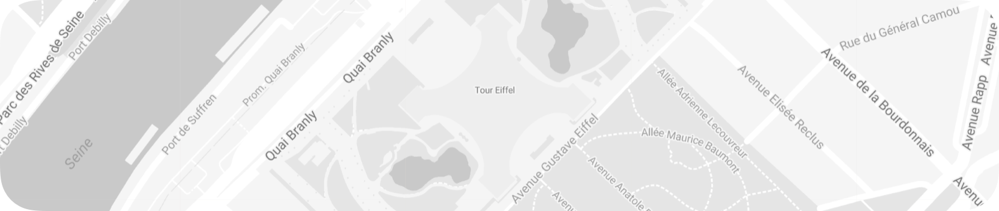

Eiffel Tower
Tour Eiffel - Since 1887
The Eiffel Tower is a wrought iron lattice tower on the Champ de Mars in Paris, France. It is named after the engineer Gustave Eiffel, whose company designed and built the tower.
Constructed from 1887–89 as the entrance to the 1889 World's Fair, it was initially criticized by some of France's leading artists and intellectuals for its design, but it has become a global cultural icon of France and one of the most recognisable structures in the world.[3] The Eiffel Tower is the most-visited paid monument in the world; 6.91 million people ascended it in 2015.
The tower is 324 metres (1,063 ft) tall, about the same height as an 81-storey building, and the tallest structure in Paris. Its base is square, measuring 125 metres (410 ft) on each side. During its construction, the Eiffel Tower surpassed the Washington Monument to become the tallest man-made structure in the world, a title it held for 41 years until the Chrysler Building in New York City was finished in 1930. Due to the addition of a broadcasting aerial at the top of the tower in 1957, it is now taller than the Chrysler Building by 5.2 metres (17 ft). Excluding transmitters, the Eiffel Tower is the second tallest structure in France after the Millau Viaduct.
The tower has three levels for visitors, with restaurants on the first and second levels. The top level's upper platform is 276 m (906 ft) above the ground – the highest observation deck accessible to the public in the European Union. Tickets can be purchased to ascend by stairs or lift to the first and second levels. The climb from ground level to the first level is over 300 steps, as is the climb from the first level to the second. Although there is a staircase to the top level, it is usually accessible only by lift.